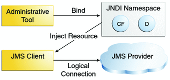

Basic JMS API Concepts
This section introduces the most basic JMS API concepts, the ones you must know to get started writing simple application clients that use the JMS API.
The next section introduces the JMS API programming model. Later sections cover more advanced concepts, including the ones you need in order to write applications that use message-driven beans.
JMS API Architecture
A JMS application is composed of the following parts.
A JMS provider is a messaging system that implements the JMS interfaces and provides administrative and control features. An implementation of the Java EE platform includes a JMS provider.
JMS clients are the programs or components, written in the Java programming language, that produce and consume messages. Any Java EE application component can act as a JMS client.
Messages are the objects that communicate information between JMS clients.
Administered objects are preconfigured JMS objects created by an administrator for the use of clients. The two kinds of JMS administered objects are destinations and connection factories, described in JMS Administered Objects.
Figure 47-2 illustrates the way these parts interact. Administrative tools allow you to bind destinations and connection factories into a JNDI namespace. A JMS client can then use resource injection to access the administered objects in the namespace and then establish a logical connection to the same objects through the JMS provider.
Figure 47-2 JMS API Architecture
Messaging Domains
Before the JMS API existed, most messaging products supported either the point-to-point or the publish/subscribe approach to messaging. The JMS specification provides a separate domain for each approach and defines compliance for each domain. A stand-alone JMS provider can implement one or both domains. A Java EE provider must implement both domains.
In fact, most implementations of the JMS API support both the point-to-point and the publish/subscribe domains, and some JMS clients combine the use of both domains in a single application. In this way, the JMS API has extended the power and flexibility of messaging products.
The JMS specification goes one step further: It provides common interfaces that enable you to use the JMS API in a way that is not specific to either domain. The following subsections describe the two messaging domains and the use of the common interfaces.
Point-to-Point Messaging Domain
A point-to-point (PTP) product or application is built on the concept of message queues, senders, and receivers. Each message is addressed to a specific queue, and receiving clients extract messages from the queues established to hold their messages. Queues retain all messages sent to them until the messages are consumed or expire.
PTP messaging, illustrated in Figure 47-3, has the following characteristics:
Each message has only one consumer.
A sender and a receiver of a message have no timing dependencies. The receiver can fetch the message whether or not it was running when the client sent the message.
The receiver acknowledges the successful processing of a message.
Figure 47-3 Point-to-Point Messaging

Use PTP messaging when every message you send must be processed successfully by one consumer.
Publish/Subscribe Messaging Domain
In a publish/subscribe (pub/sub) product or application, clients address messages to a topic, which functions somewhat like a bulletin board. Publishers and subscribers are generally anonymous and can dynamically publish or subscribe to the content hierarchy. The system takes care of distributing the messages arriving from a topic’s multiple publishers to its multiple subscribers. Topics retain messages only as long as it takes to distribute them to current subscribers.
Pub/sub messaging has the following characteristics.
Each message can have multiple consumers.
Publishers and subscribers have a timing dependency. A client that subscribes to a topic can consume only messages published after the client has created a subscription, and the subscriber must continue to be active in order for it to consume messages.
The JMS API relaxes this timing dependency to some extent by allowing subscribers to create durable subscriptions, which receive messages sent while the subscribers are not active. Durable subscriptions provide the flexibility and reliability of queues but still allow clients to send messages to many recipients. For more information about durable subscriptions, see Creating Durable Subscriptions.
Use pub/sub messaging when each message can be processed by any number of consumers (or none). Figure 47-4 illustrates pub/sub messaging.
Figure 47-4 Publish/Subscribe Messaging

Programming with the Common Interfaces
Version 1.1 of the JMS API allows you to use the same code to send and receive messages under either the PTP or the pub/sub domain. The destinations you use remain domain-specific, and the behavior of the application will depend in part on whether you are using a queue or a topic. However, the code itself can be common to both domains, making your applications flexible and reusable. This tutorial describes and illustrates these common interfaces.
Message Consumption
Messaging products are inherently asynchronous: There is no fundamental timing dependency between the production and the consumption of a message. However, the JMS specification uses this term in a more precise sense. Messages can be consumed in either of two ways:
Synchronously: A subscriber or a receiver explicitly fetches the message from the destination by calling the receive method. The receive method can block until a message arrives or can time out if a message does not arrive within a specified time limit.
Asynchronously: A client can register a message listener with a consumer. A message listener is similar to an event listener. Whenever a message arrives at the destination, the JMS provider delivers the message by calling the listener’s onMessage method, which acts on the contents of the message.